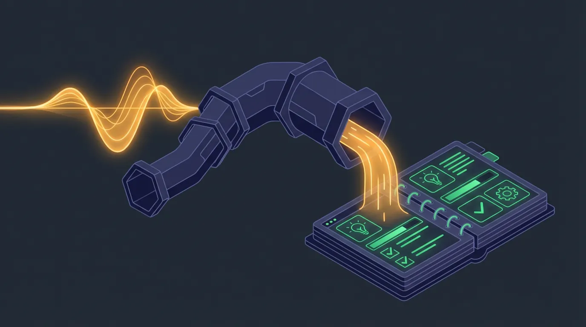

Automatisierung · · 8 Min.
Die Feierabend-Pipeline: Wie Sie Ihre besten Ideen nie wieder vergessen
Aus dem Archiv: Dieser Beitrag ist vor über einem halben Jahr erschienen. Manche Zahlen und Produktnamen haben sich seither geändert.

Mit KI erstellt (gpt-image-2.5-sunburst, 10/2026)Das Wichtigste in Kürze
- OpenAI Whisper wurde auf 680.000 Stunden mehrsprachigem Audio trainiert und erreicht 92% Genauigkeit über 98 Sprachen
- Moderne Transkription funktioniert auch bei Hintergrundgeräuschen, Akzenten und Fachjargon
- Die meisten Ideen entstehen unterwegs – beim Autofahren, Spazieren, unter der Dusche
- Eine Voice-Pipeline speichert Gedanken, strukturiert sie und macht sie durchsuchbar
- Die Technologie ist reif – was fehlt, ist der Workflow
Die besten Ideen kommen nicht am Schreibtisch. Sie kommen auf dem Heimweg.
Im Auto. Beim Spazieren mit dem Hund. Unter der Dusche. In Momenten, in denen Sie keine Hand frei haben, um etwas aufzuschreiben.
Und bis Sie zu Hause sind, haben Sie die Hälfte vergessen.
Das verlorene Wissen
Ich kenne das aus eigener Erfahrung. Nach einem Workshop bin ich voller Eindrücke. Was hat funktioniert? Was nicht? Was sollte ich beim nächsten Mal anders machen?
Früher fuhr ich nach Hause, kam an, machte Abendessen – und am nächsten Morgen war die Hälfte weg. Nicht komplett vergessen, aber zu diffus, um daraus etwas zu machen.
Das Problem ist nicht, dass wir zu wenig denken. Das Problem ist, dass wir zu wenig festhalten.
Was die meisten übersehen: Sprechen ist 4x schneller als Tippen
Die übliche Reaktion: "Ich nehme mir vor, abends noch Notizen zu machen."
Das funktioniert nicht. Abends sind Sie müde. Die Gedanken sind nicht mehr frisch. Und ehrlich: Sie haben Besseres zu tun.
Die eigentliche Lösung: Festhalten, wenn der Gedanke da ist. Und das geht nur per Sprache.
Die Zahlen:
| Methode | Wörter pro Minute | Für 500 Wörter |
|---|---|---|
| Tippen (Durchschnitt) | 40 WPM | 12,5 Min |
| Tippen (schnell) | 70 WPM | 7 Min |
| Sprechen (normal) | 150 WPM | 3,3 Min |
| Sprechen (schnell) | 180 WPM | 2,8 Min |
Sprechen ist nicht nur schneller – es ist auch natürlicher. Sie müssen nicht formulieren, nicht formatieren, nicht an Rechtschreibung denken. Sie reden einfach.
Warum das jetzt funktioniert: Whisper hat alles verändert
Früher war Spracherkennung ein Witz. "Ich möchte einen Termin buchen" wurde zu "Ich möchte einen Termin bugen". Akzente? Vergiss es. Hintergrundgeräusche? Unmöglich.
Das hat sich fundamental geändert.
OpenAI Whisper wurde auf 680.000 Stunden Audio trainiert – ein Drittel davon nicht-englisch. Laut AI-Automation-Engineers erreicht es 92% Genauigkeit über 98 Sprachen.
Was Whisper kann:
- Akzente verstehen (auch Dialekte)
- Hintergrundgeräusche filtern
- Fachjargon erkennen
- Automatisch Satzzeichen setzen
- In andere Sprachen übersetzen
Was das praktisch bedeutet: Sie können im Auto sprechen, während Radio läuft. Sie können beim Spazieren diktieren, während Autos vorbeifahren. Sie können nach dem Meeting Ihre Gedanken festhalten, während im Hintergrund noch geplaudert wird.
Die Technologie ist kein Hindernis mehr.
Der Workflow: Von der Sprachnotiz zum strukturierten Wissen
Hier ist der Workflow, den ich täglich nutze:
Schritt 1: Aufnehmen (unterwegs)
Tool: Standard-Sprachnotiz-App am Handy (vorinstalliert)
Wann: Immer wenn ein Gedanke kommt – im Auto, beim Spazieren, zwischen Terminen
Wie: Einfach drauflos reden. Keine Struktur, keine Formatierung. Nur festhalten.
Beispiel: "Okay, der Workshop heute. Was mir aufgefallen ist: Die Leute waren am Anfang skeptisch, aber beim Live-Demo mit ChatGPT ist der Funke übergesprungen. Nächstes Mal sollte ich das Demo früher machen, vielleicht gleich in den ersten zehn Minuten..."
Schritt 2: Transkribieren (automatisch)
Tool: Whisper (lokal oder via API)
Wann: Automatisch, wenn ich zuhause bin (oder manuell bei Bedarf)
Wie: Audio-Datei wird zu Text
Für technisch Versierte: Whisper lässt sich lokal installieren – dann verlassen Ihre Daten nie Ihren Rechner. Für alle anderen gibt es fertige Apps wie VOMO, Transcribe oder die integrierte Transkription in vielen Notiz-Apps.
Schritt 3: Strukturieren (mit KI)
Tool: Claude, ChatGPT oder lokales LLM
Wann: Am Abend oder am nächsten Morgen
Wie: Die Transkription wird von der KI strukturiert
Prompt: "Hier ist eine Sprachnotiz nach einem Workshop. Extrahiere: 1) Was hat funktioniert? 2) Was nicht? 3) Konkrete Verbesserungen für nächstes Mal. Halte dich an meine Originalworte, aber strukturiere sie."
Schritt 4: Archivieren (durchsuchbar)
Tool: Notion, Obsidian, Apple Notes oder simpler Ordner
Wann: Direkt nach dem Strukturieren
Wie: Strukturierte Notiz wird abgelegt, mit Datum und Kontext
Das Ergebnis: Aus einer 3-Minuten-Sprachnotiz wird ein strukturiertes Dokument, das ich Jahre später noch finden und nutzen kann.
Konkrete Anwendungen
1. Nach Meetings: Die 5-Minuten-Nachbereitung
Direkt nach dem Meeting, auf dem Weg zum Auto:
"Meeting mit Kunde X. Hauptthema war Budget für nächstes Jahr. Sie haben signalisiert, dass 50k möglich wären, aber erst Q2. Action Items: Angebot bis Freitag, Follow-up Call in zwei Wochen. Mein Eindruck: Die CFO war skeptisch, der Geschäftsführer will es eigentlich..."
Wert: Keine Informationen gehen verloren. Ihr CRM bleibt aktuell. Sie erinnern sich auch in drei Monaten noch an die Stimmung im Raum.
2. Beim Pendeln: Tagesplanung und -reflexion
Morgens auf dem Weg zur Arbeit:
"Heute steht an: Workshop-Vorbereitung fertig machen, Angebot für Y schreiben, Nachmittag dann der Call mit Z. Priorität hat das Angebot, weil Ende der Woche Deadline ist..."
Abends auf dem Heimweg:
"Der Tag heute. Workshop-Vorbereitung ist fertig. Angebot hab ich nicht geschafft, weil der Call mit Z länger war als geplant. Morgen früh direkt damit anfangen..."
Wert: Sie starten fokussiert in den Tag. Sie schließen den Tag ab, ohne Gedanken mit nach Hause zu nehmen.
3. Bei Spaziergängen: Kreative Problemlösung
"Ich denke gerade über das Marketing nach. Was wir bisher machen, funktioniert nicht wirklich. Die LinkedIn-Posts bringen Reichweite, aber keine Anfragen. Vielleicht sollten wir stattdessen... was wäre, wenn wir einen Newsletter starten, der nur für bestehende Kontakte ist? Nicht für neue Leads, sondern um bei den Leuten zu bleiben, die uns schon kennen..."
Wert: Die besten Ideen kommen in Bewegung. Jetzt gehen sie nicht mehr verloren.
4. Nach Workshops/Kursen: Lessons Learned
"Workshop bei Firma X, 12 Teilnehmer. Was gut lief: Die Übung mit dem eigenen Firmenprompt hat alle aktiviert. Was nicht funktioniert hat: Der theoretische Teil am Anfang war zu lang. Nächstes Mal: Theorie auf 10 Minuten kürzen, Praxis nach vorne ziehen. Generell: Mehr Pausen einbauen, die Leute waren nach 90 Minuten müde..."
Wert: Jeder Workshop macht Sie besser. Sie wiederholen keine Fehler.
Die Datenschutz-Frage: Wo werden Ihre Gedanken verarbeitet?
Hier wird es wichtig – vor allem für geschäftliche Inhalte.
| Lösung | Daten bleiben bei Ihnen? | Aufwand |
|---|---|---|
| Whisper lokal + lokales LLM | ✅ Ja | Hoch |
| Whisper lokal + Cloud-LLM | 🟡 Teilweise | Mittel |
| Cloud-Transkription + Cloud-LLM | ❌ Nein | Gering |
| Fertige App (z.B. Otter.ai) | ❌ Nein | Minimal |
Meine Empfehlung:
- Für persönliche Gedanken und unkritische Inhalte: Fertige Apps sind okay
- Für geschäftliche Inhalte: Mindestens Whisper lokal
- Für sensible Daten: Komplett lokale Pipeline
Whisper ist Open Source und kann auf Ihrem eigenen Rechner laufen. Die Qualität ist identisch zur Cloud-Version – nur Ihre Daten bleiben bei Ihnen.
Mehr zum Thema Datensouveränität: [Wem gehören die Daten?](/blog/ki-souveraenitaet-schatten-ki-oesterreich-2025)
Die Grenzen (und wie Sie damit umgehen)
Limit 1: Halluzinationen
Whisper kann manchmal Wörter "erfinden", die nicht gesagt wurden – besonders bei Pausen oder unklarem Audio. Laut Hybridbanker macht das Whisper "weniger geeignet für Hochrisiko-Kontexte wie medizinische oder rechtliche Protokolle ohne menschliche Kontrolle."
Lösung: Für kritische Inhalte: Transkription überfliegen, bevor Sie sie weiterverwenden.
Limit 2: Keine Sprechererkennung
Whisper unterscheidet nicht automatisch zwischen Sprechern. Bei Meetings mit mehreren Teilnehmern wissen Sie nicht, wer was gesagt hat.
Lösung: Am Anfang jedes Redebeitrags den Namen sagen: "Hans hier: Ich denke, wir sollten..." Das ist umständlich, funktioniert aber.
Limit 3: Dialekte
Bei starken Dialekten (Schweizerdeutsch, Österreichisch) kann die Genauigkeit sinken.
Lösung: Etwas deutlicher sprechen als im Alltag. Oder: Akzeptieren, dass "Standarddeutsch" als Zieltext rauskommt.
Wie starten Sie heute?
Minimaler Start (5 Minuten)
- Öffnen Sie die Sprachnotiz-App auf Ihrem Handy
- Sprechen Sie auf dem nächsten Heimweg Ihre Gedanken ein
- Hören Sie die Aufnahme am Abend an
Das war's. Kein Tool, keine Installation. Nur die Gewohnheit etablieren.
Nächster Schritt (30 Minuten)
- Installieren Sie eine Transkriptions-App (z.B. Transcribe, VOMO)
- Lassen Sie eine Sprachnotiz transkribieren
- Kopieren Sie das Transkript in ChatGPT/Claude mit dem Prompt: "Strukturiere diese Notiz in Kernpunkte und Action Items"
Vollständige Pipeline (2-3 Stunden Setup)
- Whisper lokal installieren (für Datenschutz)
- Automatisierung einrichten (z.B. über Shortcuts/Automator)
- Ablagesystem definieren (Ordner oder Notiz-App)
- Workflow testen und anpassen
Die eine Frage für heute
Welchen Gedanken haben Sie auf dem letzten Heimweg gehabt – und können sich jetzt nicht mehr daran erinnern?
Das ist der Preis, den wir jeden Tag zahlen. Nicht weil die Technologie fehlt. Sondern weil wir sie nicht nutzen.
Die Feierabend-Pipeline ändert das. Ein Gedanke, drei Minuten Sprechen, und das Wissen ist gesichert.
Weiterführende Artikel
- [Vibe Coding](/blog/vibe-coding-ki-software-kmu-ohne-entwickler) – Software durch Beschreiben statt Programmieren
- [Das Schleusen-Prinzip](/blog/schleusen-prinzip-cloud-ki-hybrid) – Welche Daten dürfen in die Cloud?
- [Wem gehören die Daten?](/blog/ki-souveraenitaet-schatten-ki-oesterreich-2025) – Datensouveränität im KI-Zeitalter
Quellen
- OpenAI Whisper
- Whisper Open-Source (The Decoder)
- Whisper Revolution (AI-Automation-Engineers)
- Whisper Glossar (KI Engineering)
Armin Fradler begleitet Bildungsorganisationen und Teams beim Umgang mit KI und unterrichtet selbst in der Erwachsenenbildung.